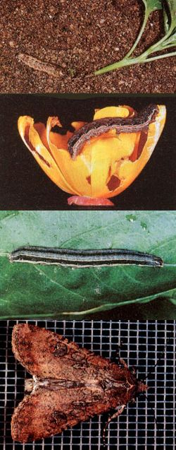

Here's the sixteenth in a series of articles that will help you tell friend from foe in your garden.
Let's imagine ahead a couple of months to early spring. It's planting time, and an enthusiastic organic gardener has just set out a beautiful assortment of tender young seedlings. Her work done, she stands back and proudly surveys the newly planted veggie patch-and sleeps soundly that night with visions of mature cabbages, tomatoes, and peppers dancing in her head.
The shock comes next morning when our hopeful backyard farmer steps out the door to admire her new garden, only to find several of her freshly transplanted seedlings lying prone and lifeless, their stems severed at or near ground level.
Unlike the nibbling attacks launched by most other garden insect pests, cutworm damage-immediate and irrevocable-is fatal. to seedlings. And just one lonely cutworm can destroy several plants in a single night's foray.
Most cutworms are gray, brown, or black, sometimes with spots or stripes. They average about an inch long, tend to curl up when disturbed, and, after the better part of two summers spent in the destructive larval form, become harmless, nectar-drinking owlet moths (family Noctuidae), commonly known as millers.
For the sake of scientific convenience, the 20,000 or so species of cutworms are frequently divided according to feeding habits into four primary groups: surface feeders, tunnel makers, subterranean cutworms, and climbers.
Of the four, the surface feeders are the variety most often associated with the name cutworm, because they neatly slice through the stems of plants near ground level. Even more destructive, though, are the tunnel makers, since they often sever the stems of many more plants than they eat. Unlike the first two groups, subterranean cutworms live almost entirely below ground.
The final class of cutworms, the climbers, differ from the other three categories of Noctuidae larvae in that they inflict most of their damage, not to a plant's stem, but rather to its leaves. The most destructive variety of climbing cutworm is the armyworm, a brightly striped moth larva that often attacks gardens and farm fields in battalion strength, destroying the hard-won produce of human labor in short order.
To fight those varieties of cutworms that sever the stems of seedlings, simply make up a batch of stif cardboard plant collars-each 2" to 3" high-pressing one a half inch or so into the soil around each seedling at transplant time. You can also employ small tin cans for this purpose, though my personal choice is to cut 3"-long sections of 4"diameter plastic drainpipe, forming collars that will protect seedlings from hungry field mice, as well.
While collars may also provide a modicum of protection against climbing cutworms, the wise gardener won't count on this defense. These acrobatic pests are best controlled by methodically plucking them off your plants by hand and then destroying them by foot . . . or by treating your garden with Bacillus thuringiensis.
Cutworms can also be at least partially controlled by encouraging the presence of natural predators and parasites in your garden. Birds love to scratch the ground looking for these plump morsels; ground beetles-those black or brown, somewhat flattened beetles that live under stones and debris-hunt cutworms at night and can put a sizable dent in their numbers; and the tiny wasp Trichogramma minutum deposits its eggs among the eggs of the cutworm moth so that the newly hatched wasp larvae can feed upon the embryos inside the unhatched moth eggs.
Also, since the owlet moths most often deposit their eggs in ground debris, cleaning your garden area of weeds and mulch each autumn will help minimize cutworm damage the following spring by reducing the number of miller larvae hatching in and near your vegetable patch.
Finally, deep plowing or tilling, combined with slightly delayed planting in the spring, can be a highly effective deterrent to cutworm infestation. The tilling will destroy a great many hibernating (second season) cutworms, while simultaneously removing the tender young weed seedlings that any newly hatched survivors of the tilling will need to nurse them through their first few days of life.
As our hypothetical horticulturist discovered, cutworms are among the most destructive of garden pests. But, by combining commonsense organic battle tactics with tenacity, the little blighters can be defeated.
|
 |
|
|